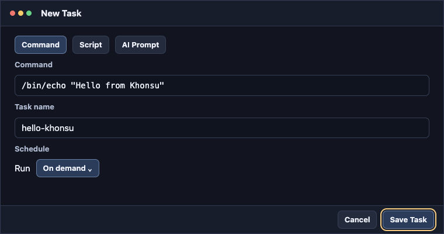
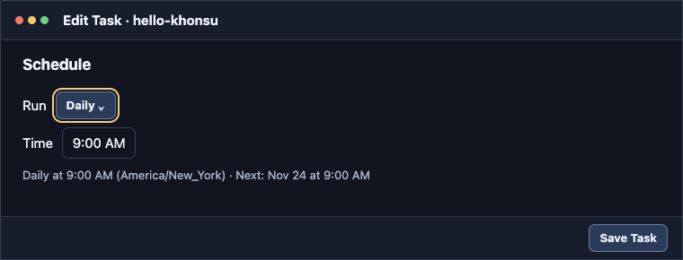
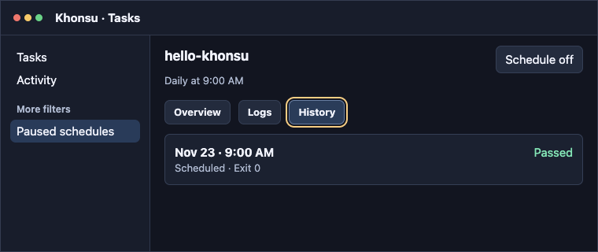
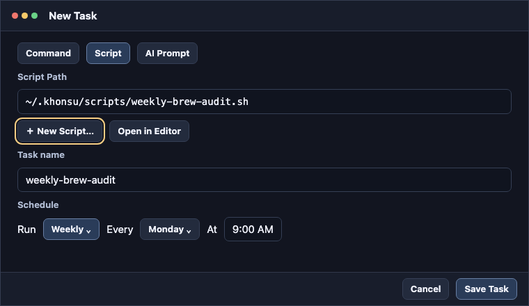
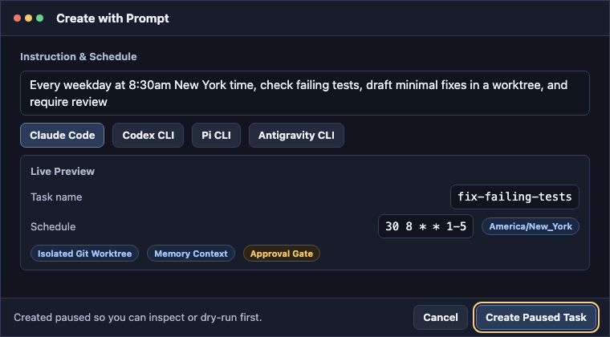
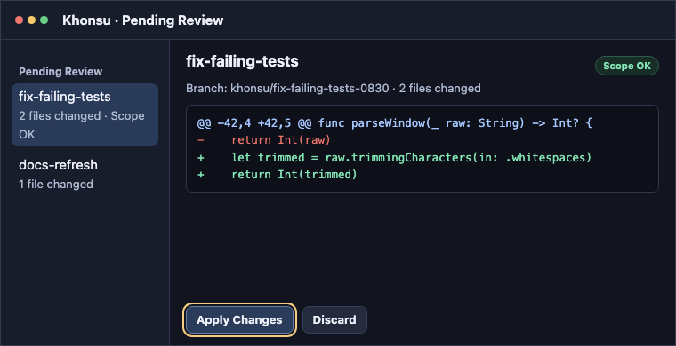
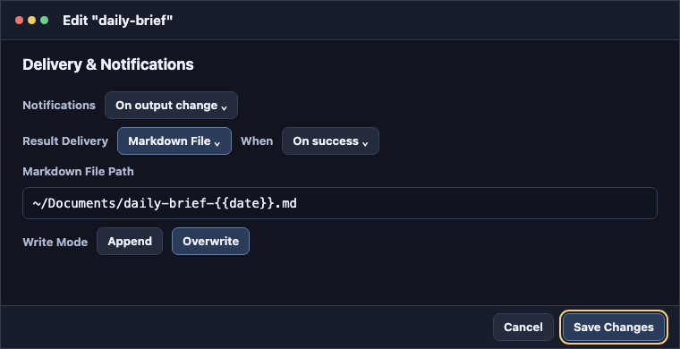
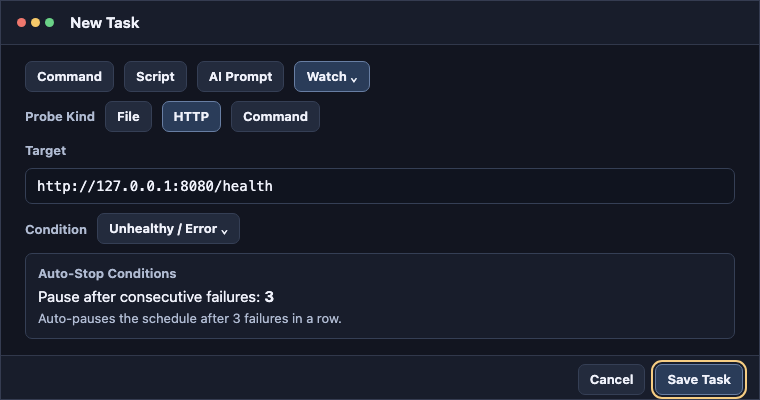
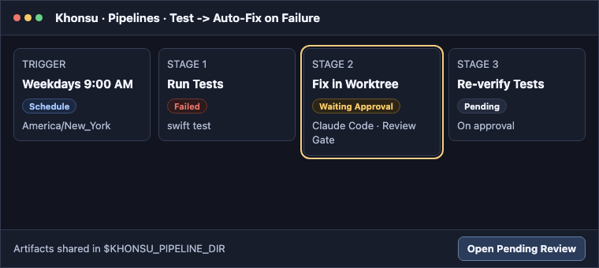
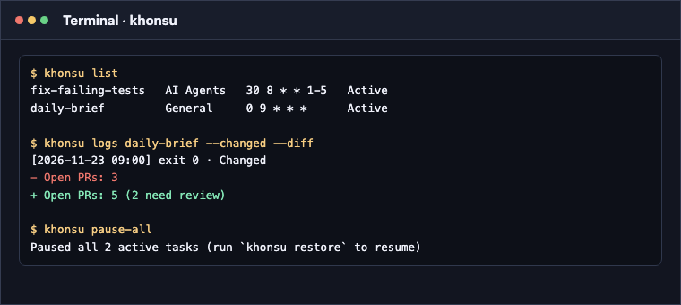

Khonsu tutorials
Run commands and scripts, schedule AI agents safely, deliver outputs, build pipelines, and control tasks from the CLI. Follow along in Khonsu for macOS 14 or later.
Try the built-in example
See a task go from start to result with the local text report bundled with Khonsu.
- On the welcome screen, click Run an Example.
- Open Overview for the result or Logs for the output. The example counts the words and lines in bundled text.
- To repeat it, select sample-text-report and click Run.

Run your own command
Start with a command that prints a line of text.
- Click New Task and choose Command.
- Enter
/bin/echo "Hello from Khonsu"and name the task hello-khonsu. - Leave Run set to On demand and click Save Task.
- Select the task and click Run. In Logs, look for
Hello from Khonsu.


Schedule a daily task
Give an existing task a regular time to run.
- Select hello-khonsu and click Edit in the task details.
- Under Schedule, set Run to Daily and choose 9:00 AM.
- Check the timezone and the preview of the next run. Save the task, then look under Overview → Schedule to confirm when it will run.


Reuse an agent prompt
Save instructions you reach for often, such as a checklist for reviewing release notes.
- Open Khonsu → Settings → Agents. Choose a starter such as Code Reviewer and click Duplicate, or click Create New Agent.
- Fill in Name, Description, and Prompt. Click Save Agent.
- Create an AI Prompt task and select your agent under Use Agent Prompt. Khonsu copies the prompt into Instruction, where you can tailor it to the task.
- Choose an available runner under Run with. If it needs setup, open Settings → Advanced for Coding Agents or AI Providers.

Tasks keep the prompt text they were saved with. To pick up a later edit to the agent, apply its prompt to the task again.
Review and pause a task
Check the last run before deciding whether the task should keep running on its schedule.
- Select the task and open History. Pick a run to inspect its status, then use Logs to see output or errors.
- To pause future runs, switch the task off using its schedule toggle. You can find paused tasks under More filters → Paused schedules.
- Switch the task back on when you are ready. Overview → Schedule shows the next run.


Run a saved script
Keep multi-line shell or Python maintenance jobs in executable files instead of crowding a one-line command.
- Click New Task and choose Script.
- Click New Script… to create a starter file in
~/.khonsu/scripts/and open it in your editor, or enter an existing file under Script Path. - Expand Script options if you need a custom Interpreter such as
/usr/bin/python3or Stdin (optional). - Set Run to Weekly (or Weekdays), confirm Enable schedule, and click Save Task.


Choose your preferred editor (Zed, Cursor, Visual Studio Code, or macOS Default) in Settings → General → Defaults.
Create a task in plain English
Describe a recurring AI task in natural language and let Khonsu fill in the schedule, timezone, and safety defaults.
- Open the toolbar More actions (
…) menu and choose Create Task from a Description…. - Enter a description—for example,
Every weekday at 8:30am New York time, check failing tests, draft minimal fixes in a worktree, and require review—or pick a starter under Examples. - Select an agent preset such as Claude Code or Codex CLI, confirm the Workspace folder, and check Live Preview (or click Refine with AI if an AI provider is configured).
- Click Create Paused Task. Inspect the task or run it once before enabling its schedule.


Review isolated Git worktree edits
Let a coding agent edit a repository on a temporary branch and inspect every line before applying changes.
- Edit an AI Prompt task, expand Advanced execution, and turn on Run in isolated Git worktree. Optionally set Allowed Write Globs (Optional) (such as
docs/**, Tests/**) and turn on Share memory across runs so the agent can read$KHONSU_PREV_OUTPUTand$KHONSU_MEMORY_FILE. - Run the task. Clean runs delete the temporary worktree automatically; runs with edits appear in Pending Review.
- Open Pending Review in the sidebar to check Write Scope Check and the Unified Diff, then click Apply Changes—or Discard to remove the temporary branch.


You can also review from the terminal with khonsu review fix-failing-tests, khonsu review fix-failing-tests --apply, or --discard.
Deliver output to Markdown or a webhook
Save daily digests to a dated Markdown file or send alerts to Slack, Discord, or custom webhooks only when output matters.
- Select a task, click Edit, and expand Delivery & Notifications.
- Choose when macOS alerts fire under Notifications (for example, On output change or On failure).
- Under Result Delivery (Optional), pick Markdown File (such as
~/Documents/daily-brief-{{date}}.mdwith Append or Overwrite) or Webhook URL, then choose When to deliver (Always, On success, On failure, or On output change). - Click Save Changes. In History or Activity, filter Changed only or switch stdout to Diff or Markdown to see what changed between runs.


Watch an endpoint with auto-stop
Probe a local service, file, or command on a cadence and automatically pause the schedule if a failure threshold trips.
- Click New Task, open More types, and choose Watch.
- Choose a Probe Kind (HTTP, File, or Command), enter a Target such as
http://127.0.0.1:8080/health, and select a Condition (Unhealthy / Error, Numeric Threshold, or Overdue / Stale). - Expand Advanced execution → Auto-Stop Conditions and set a guardrail such as Pause after consecutive failures (or Stop when output changes), then click Save Task.


Auto-stop rules run inside Khonsu's scheduler engine. When a guardrail trips, Khonsu marks the task Auto-paused until you resume its schedule.
Build a multi-step pipeline
Chain tests, agent fixes, and verification left-to-right with shared artifacts and optional human approval gates.
- Open the toolbar More actions (
…) menu and choose Pipelines → New Pipeline…. - Pick a starter recipe—such as Test -> Auto-Fix on Failure, Web Research -> Markdown Brief, or Parallel Audits -> Morning Brief—choose your Coding Agent and Working Directory, and click Create Pipeline.
- Review stages left-to-right on the Pipelines board. Click any stage to inspect
$KHONSU_PIPELINE_DIRartifacts, or open Pending Review and click Approve & Continue Pipeline when a review gate pauses.


Scheduled and watch recipes start paused so you can inspect or test individual stages first.
Control tasks from the CLI
Trigger runs, inspect diffs, approve pipeline gates, and pause all scheduled tasks from your terminal.
- Leave Khonsu running in the menu bar so the local loopback server is available to the
khonsuCLI. - Run commands to inspect status, wait on a run, or view only changed output:
khonsu list khonsu run --wait daily-brief khonsu logs daily-brief --changed --diff khonsu create "Weekdays at 9am, summarize recent git commits" --workdir ~/code/repo khonsu review fix-failing-tests --apply khonsu pipeline approve test-autofix - To stop every active task immediately during an outage or travel, press ⇧⌘P in the app or run
khonsu pause-all, then runkhonsu restoreto re-enable only the tasks that were active beforehand.

